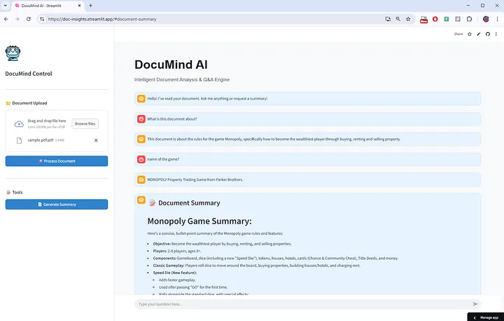

Generative AI
An advanced AI-powered application that transforms static PDF documents into interactive knowledge bases. Rebuilt as a decoupled client-server microservice, it safely handles multiple concurrent users and uses a Dual-Architecture approach: RAG for precise Q&A and Context Stuffing for full document summarization.
This project demonstrates stateless backend design and scalable architecture for real-world document intelligence at cloud-constrained environments.